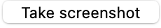
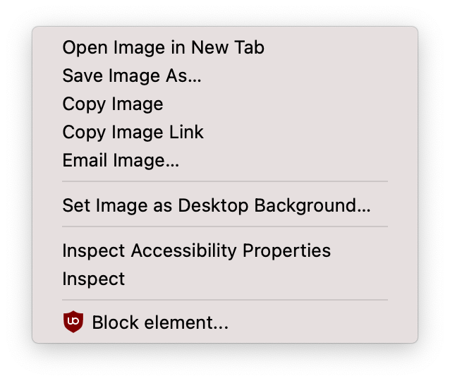
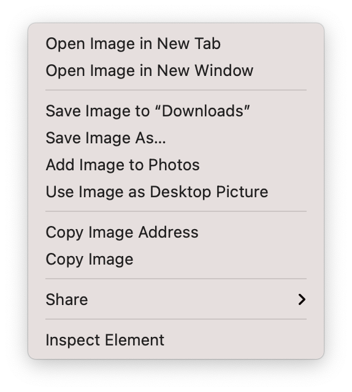

This page uses the
getDisplayMedia API
to allow the user to obtain a screenshot of the page itself.
To learn how to use this to take screenshots of other pages, see Usage.
Click the button.
Press the Allow button
The screenshot will replace the page's content.
Right-click on it and select Save Image As… to download it.
Click the button.

Press the Allow button
The screenshot will replace the page's content.
Right-click on it and select Save Image As… to download it.
Click the button.
Press the Share button
The screenshot will replace the page's content.
Right-click on it and select Save Image As… to download it.
To use Selfie to take a screenshot of another page:
<script src="https://tomashubelbauer.github.io/selfie/index.js"></script>
const script = document.createElement('script');
script.src = 'https://tomashubelbauer.github.io/selfie/index.js';
document.head.append(script);
selfie() method to show the button
The getDisplayMedia API must be called from a user gesture.
Showing a button and binding the screenshotting to its click
event is an easy way to satisfy this constraint.
The button will appear in the top left corner and will hide after click.
After clicking the button, the page will be replaced with the screenshot image which you can right-click to save. See Guides.